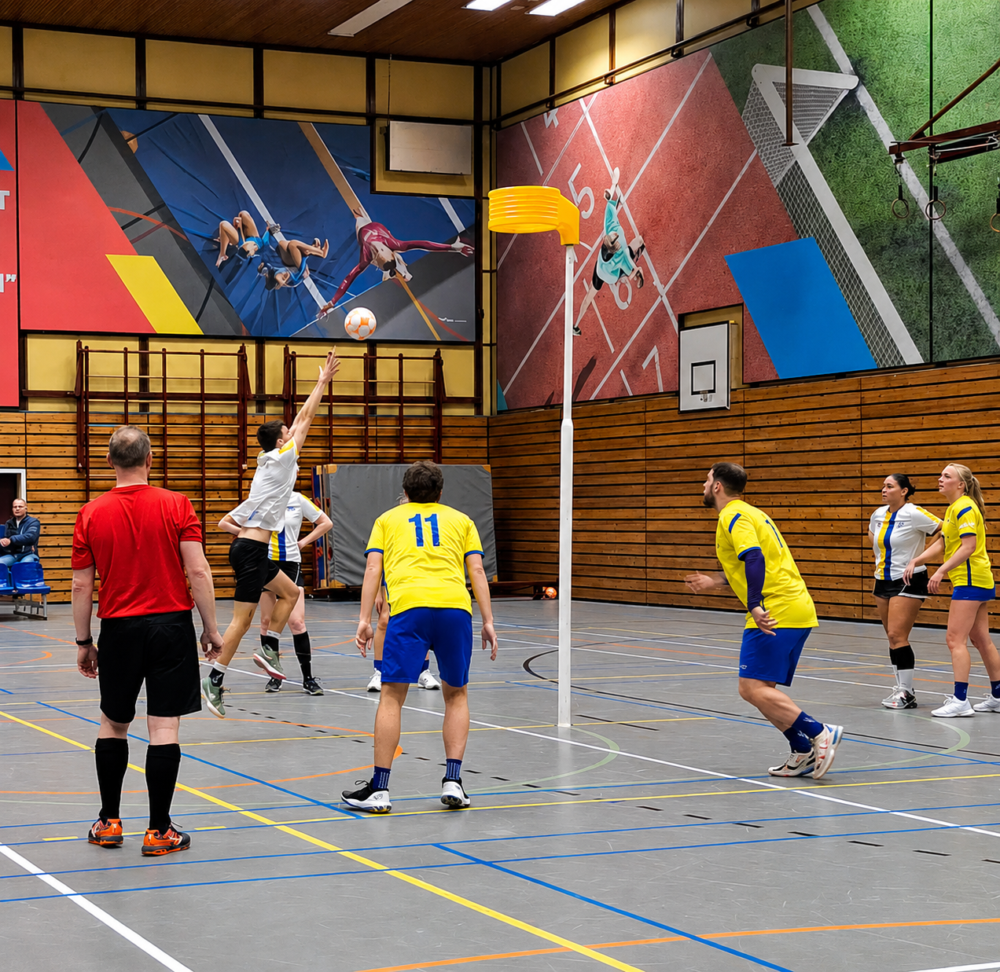
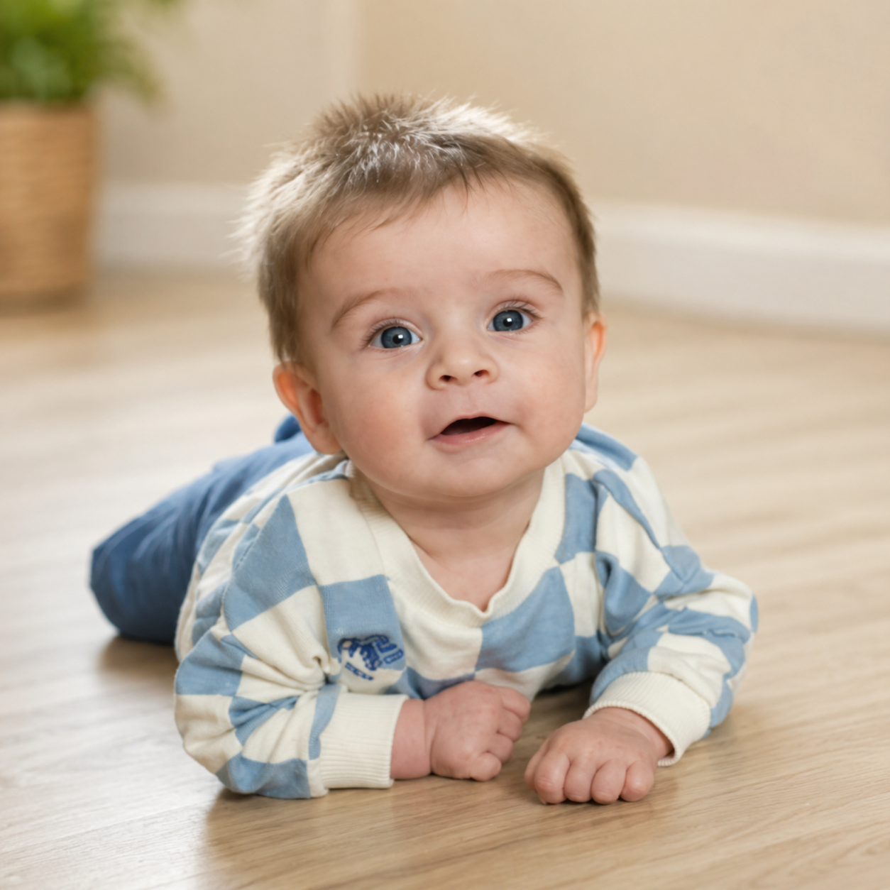
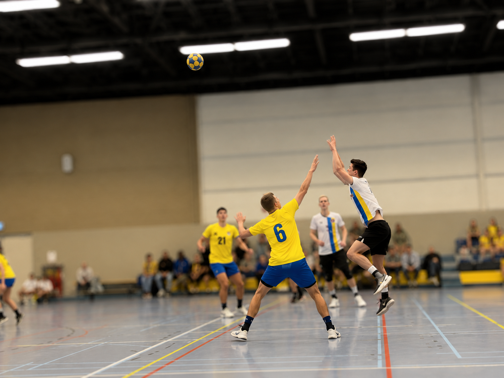
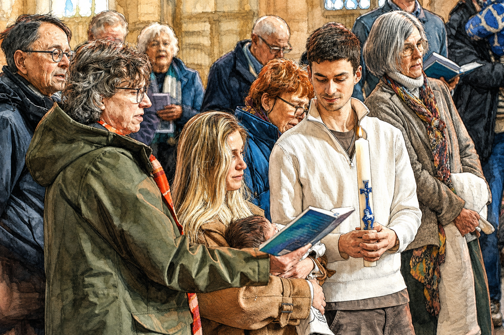
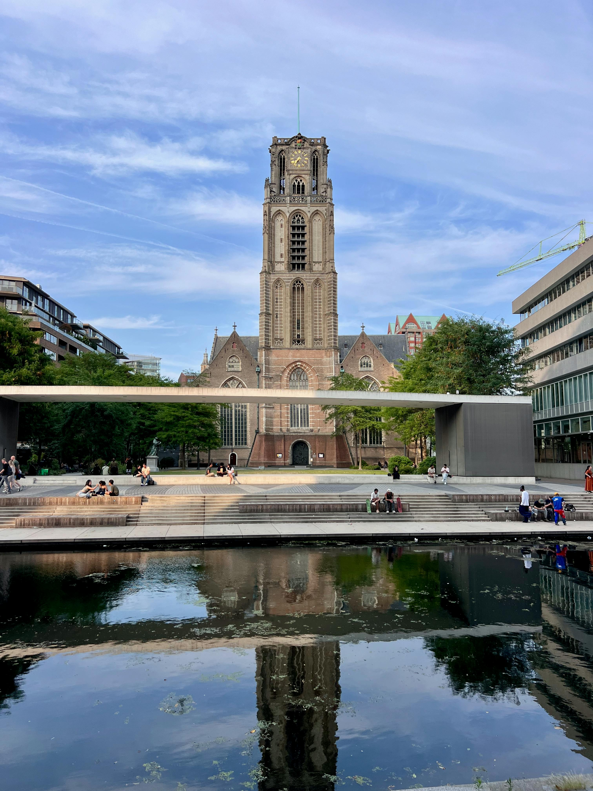
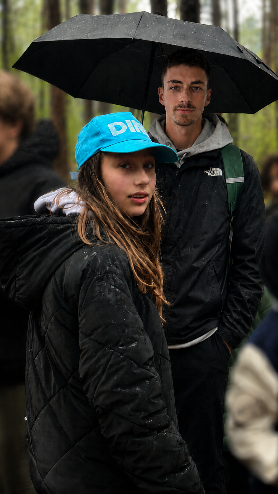
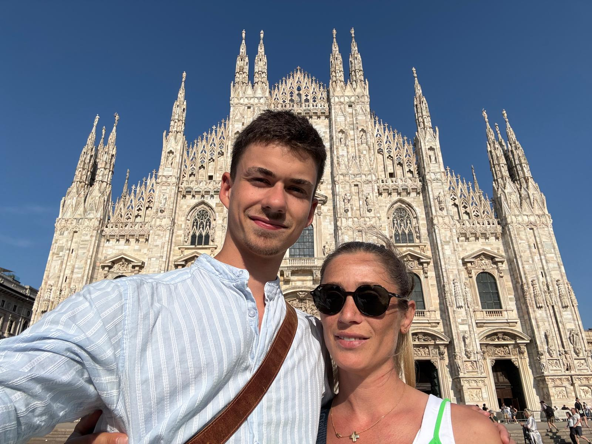

Photos







Interests
I coach youth korfball at OZC Rotterdam. Training the next generation keeps me sharp, teaches patience, and reminds me that leadership is earned on the field.
Chess teaches me to think several moves ahead and stay calm under pressure. The same mindset I bring to business decisions and product design.
I take investing seriously — ETFs, individual stocks, long-term thinking. Financial independence isn't a goal, it's a baseline. I manage portfolios for myself and my family.
I'm a dad. That changes everything — your priorities, your discipline, your reason to push harder. It's the most grounding thing in my life.
I train consistently. Physical discipline feeds mental discipline. Showing up when you don't feel like it is a skill, and you build it in the gym before anywhere else.
I'm genuinely fascinated by what AI can do — not as a hype cycle, but as a practical tool. I use it daily and build with it. The gap between what's possible and what most people use is enormous.
Mindset
I'm not the loudest person in the room. I don't need to be. I'd rather do the work and let the results speak. Accountability over excuses — that's the short version of my philosophy.
I study Entrepreneurship & Retail Management at Rotterdam University of Applied Sciences. My minor in Impact Investment Management sharpened my financial thinking and my ability to make decisions clearly. I interned at Sales in Motion, where I contributed to building an AI agent for lead generation — which sparked my drive to build software independently.
Outside of building: I coach youth korfball at OZC Rotterdam, train as an athlete, play chess, and invest. I'm also a father. I bring the same mindset to everything — structure, accountability, and the discipline to see things through.
Rotterdam shaped me. It's a city that doesn't care about appearances. It cares about what you build. 010.